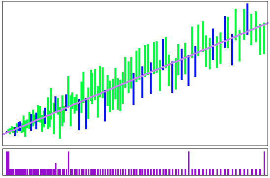

|

|
|
Abstract:
This paper presents a novel method for generating a single polynomial approximation that produces correctly rounded results for all inputs of an elementary function for multiple representations. The generated polynomial approximation has the nice property that the first few lower degree terms produce correctly rounded results for specific representations of smaller bitwidths, which we call progressive performance. To generate such progressive polynomial approximations, we approximate the correctly rounded result and formulate the computation of correctly rounded polynomial approximations as a linear program similar to our prior work on the RLIBM project. To enable the use of resulting polynomial approximations in mainstream libraries, we want to avoid piecewise polynomials with large lookup tables. We observe that the problem of computing polynomial approximations for elementary functions is a linear programming problem in low dimensions, i.e., with a small number of unknowns. We design a fast randomized algorithm for computing polynomial approximations with progressive performance. Our method produces correct and fast polynomials that require a small amount of storage. A few polynomial approximations from our prototype have already been incorporated into LLVM’s math library.
|

![[PHOTO]](../../images/knight_small.png)